WI-FI интернет радио.
Сразу сообщаю, что проект не мой, а досточтимого "JP cocatrix", за что ему огромное спасибо!!!
Я лишь воспользовался его проектом и встроил wi-fi интернет радио в свой старый бум-бокс и находясь в полнейшем восторге решил ознакомить участников форума с ним, может кому-то тоже захочется послушать любимое интернет радио в хорошем качестве.
Итак о проекте.
Сайт проекта https://hackaday.io/project/11570-wifi-webradio-with-esp8266-and-vs1053
Описание:
Приемник по существу состоит из двух готовых модулей: первого - ESP8266 4 Мб ( ESP 8266-12 или ESP 8266-7) и второго - VS1053 соединенных всего 7-ю сигнальными линиями + цепи питания - и больше для минимального варианта не требуется ни чего!!! При этом получаете интернет радио с управлением через WEB интерфейс через браузер.
Есть ли есть потребность и желание, можно дополнительно подключить клавиатуру управления (воспроизведение, стоп, следующая станция, предыдущая станция, громче, тише) и экран, причем их подключение учтено в софте.
Приемник поддерживает три вида управления:
-Web интерфейс работает с браузерами хром и т.п ... Mozilla ( IE 8 не пошел).
- кнопочное управление с клавиатуры
- с помощью интерфейса UART.
Приемник имеет память на 255 станций редактируемых через WEB интерфейс (станции могут быть загружены и выгружены через WEB интерфейс).
Поддерживает OTA обновление (обновления выходят достаточно часто).
Декодирует прямой mp3 или OGG потоки или список воспроизведения .pls .M3U и .xspf
со скоростью до 320 кб / с.
Настойка Wi - Fi конфигурации через веб - интерфейс или UART.
Осуществляет отображение метаданных (т.е. название текущей песни , если приведены в потоке) через WEB интерфейс и на экране.
Использованные комплектующие:
Модуль имеет на борту все необходимые сопротивления подтяжки, а также стабилизатор 3,3В, что позволило питать оба модуля от одного источника питания 5В. Использовал модуль предварительно выпаяв многоцветный светодиод, фотосопротивление и резистор подтяжки аналогоаого входа ( необходимо для подключения клавиатуры).
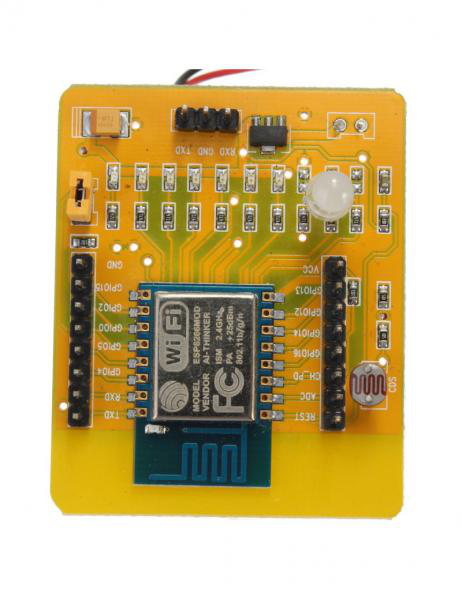
Использовал допаяв параллельно конденсаторам С18 и С17 электролиты 100 мкф/16в ( без них иногда модуль зависал). Модуль не имеет конденсаторной развязки по линейному выходу, так что будьте осторожны и при не обходимости ставьте разделительные конденсаторы ( мне не потребовались стоят в бум-боксе).
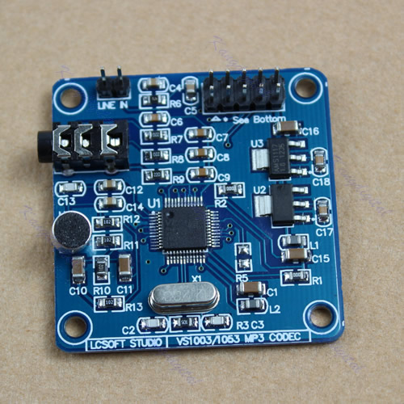
В качестве модуля питания использовал готовый модуль питания DC-DC step-down на LM2596.
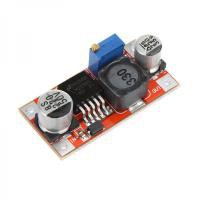
Схема ( использовал без дополнительных выходных усилителей так как подключил напрямую в линейный вход бум-бокса).
ESP8266 ADC : заземлить если клавиатура не используется
D5:GPIO14 -- VS1053 SCK
D6:GPIO12 -- VS1053 MISO
D7:GPIO13 -- VS1053 MOSI
D1:GPIO05 -- VS1053 XDCS
D2:GPIO04 -- VS1053 DREQ
D3:GPIO00 -- VS1053 XRST
D8:GPIO15 -- VS1053 XCS
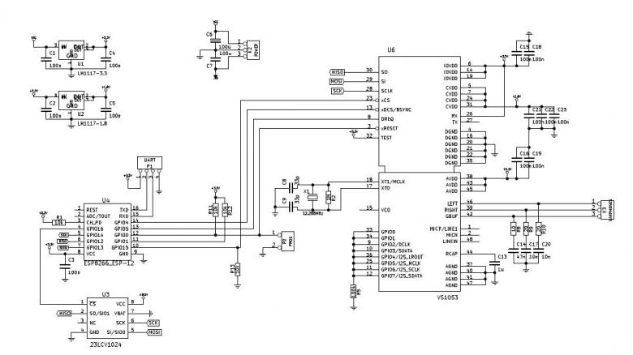
Схема клавиатуры ( резистор R1 16 kOm подстроечный многооборотный потребовался для точного попадания в заданные программой диапазоны напряжения, настраивал по срабатыванию нижней по схеме кнопки).
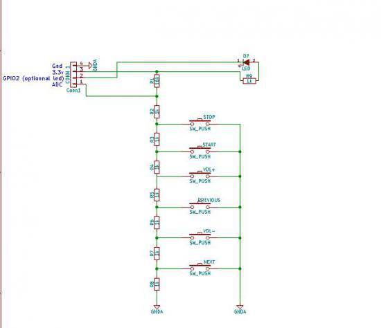
Прошивку для ESP 8266 брать с сайта проекта ( указан выше), там же картинка с адресами заливки блоков прошивки в ESP8266 с использованием ESP Flashdownload Tool v2.3
При первом запуске приемник стартует как точка доступа "WifiWebRadio", дальнейшая настройка через WEB интерфес по адресу 192.164.4.1.
В итоге ( выделено красным).
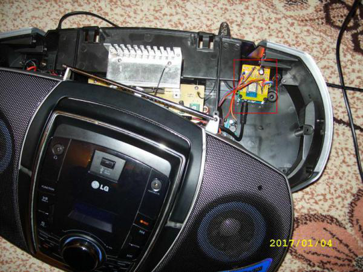
Вид WEB интерфейса при воспроизведении любимого радио:
Удачи с повторениями, и еще раз спасибо автору JP cocatrix.
Пнд, 16/01/2017 - 18:24#1
gulin176
Offline
Зарегистрирован: 03.09.2016
ещё бы экран приделать
Пнд, 16/01/2017 - 21:55#2
vis22
Offline
Зарегистрирован: 24.10.2015
Так, автор уже сделал.
-LED дисплей:https://hackaday.io/project/11570/gallery#2886678f2d7e42e0c1fb49caeed24dd6
- Дисплей от Nokia:https://hackaday.io/project/11570/gallery#f95c917f5553a1ac4c78a4741d2a412e
Схема соединений:
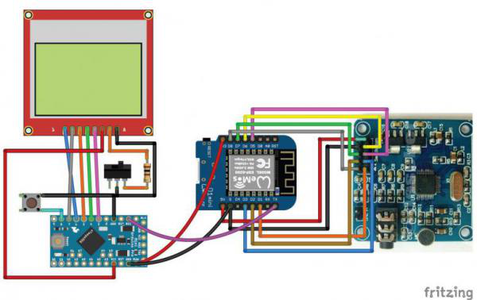
Автор собирается подключить ещё инфракрасное управление с пульта.
Пнд, 16/01/2017 - 22:30#3
vis22
Offline
Зарегистрирован: 24.10.2015
Дополнение к первому сообщению:
Инструкция по сборке минимального проекта:http://www.instructables.com/id/Wifi-Webradio-With-ESP8266-and-VS1053
Исходники, документация, прошивки:https://github.com/karawin/Ka-Radio ( последние версии прошивок лучше брать с сайта автора см. первое сообщение).
Пнд, 06/03/2017 - 12:46#4
udavst

Offline
Зарегистрирован: 29.11.2013
Прикольная штука, только я ничего на этом hackday найти не могу. Хотел бы собрать с олед экраном, но там кроме фоток ничего не вижу. Откуда Вы vis22 брали схемы? Где скетч на ардуину? Ну как зашить есп думаю разберусь, хотя до этого с ардуино проги на него только писал. И схема из первого поста есть покачественней? И прошивку, как я понял можно залить любую, она же по OTA обновится сама? Жаль нет управленияя энкодером.
Сб, 11/03/2017 - 09:37#5
vis22
Offline
Зарегистрирован: 24.10.2015
На странице hackday есть раздел DETAILS в нем есть ссылка See Github for sources
по ней найдешь все исходники, прошивки, доки, и схемы.
Скетч на Arduino не требуется, на той же станице hackday в разделе Files лежат ссылки для скачивания готовых бинарных прошивок для esp8266 ( нажми только кнопку download).
Собственно схема то не особо и нужна все контакты плат которые нужно соединить (кроме конечно питания и Gnd) описаны рядом со схемой в первом посте.
Удачи.
Ср, 05/04/2017 - 14:59#6
glin
Offline
Зарегистрирован: 16.03.2017
Хорошее описание. Спасибо.
Пытаюсь повторить. Всё прошил. В браузер захожу, но если модуль подключается к сети интернет через WIFI то точка доступа в нем становится не активна.
Ещё проблема это список рабочих каналов. Можете поделиться для образца?
Ср, 05/04/2017 - 22:31#7
vis22
Offline
Зарегистрирован: 24.10.2015
Модуль представляется точкой доступа с IP 192.168.4.1 для того , что бы вы зашли на него и через WEB интерфейс прописали SSID и пароль для подключения к вашей сети WI FI имеющей доступ к Интернет( можно прописать до двух сетей).
После нажатия кнопки "Validate" модуль перезагрузится и будет пытаться подключиться к прописанным сетям, в случае если ни к одной из двух сетей подключиться не удастстя тогда модуль возвращается в режим точки доступа с IP 192.168.4.1 ( удобно, если вы перенесли/перевезли в зоны действия других сетей WI FI и необходимо к ним подключиться.
После подключения модуля к вашей сети адрес, его можно найти в ней любой программой сетевого сканера.
Для удобстваможно на WI FI роутере явно прописал статический адрес для MAC адреса модуля ESP8266 ( MAC адрес указан на вкладке SETTING см ниже)), или как вариант можно снять галочку использовать DHCP и явно прописать желаемый IP адрес на вкладке SETTING.
Далее вбивай полученный адрес в адресную строку своего WEB браузера и получай доступ к WEB интерфесу модуля.
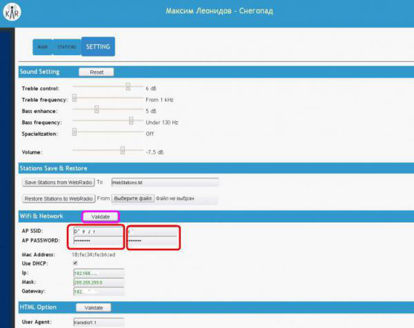
Что касается списка рабочих каналов: сделай следующее:
Выгрузи файл WebStations.txt кнопкой "Save Stations from WebRadio"
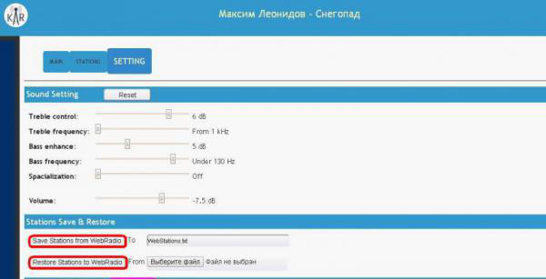
Замени содержимое файла (Блокнотом) на ниже указанный код, сохранить и загрузить новый файл WebStations.txt WEB интерфейс кнопкой "Save Stations to WebRadio"
Код WebStations.txt
показать код
То же самое можно прописать вручную на вкладке STATIONS
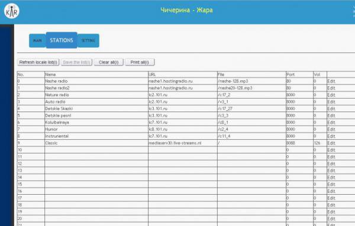
А вообще, способ определения настроек на медиапоток WEB радиостанции описан в Интернете напримерhttps://www.youtube.com/watch?v=e0KOJm1kA9s
Удачи.
Ср, 05/04/2017 - 22:49#8
glin
Offline
Зарегистрирован: 16.03.2017
Вот спасибо! Особено за пример заполнения списка радио. Всё получилось. Только что кирилица не отображается.
Теперь жду когда придет экран для дальнейшего развития.
Вс, 09/04/2017 - 17:36#9
lonely_jack
Offline
Зарегистрирован: 12.10.2015
Здравствуйте, подскажите, пожалуйста, как LCD 1602 подключить. То, что в исходниках нашел - немного не догоняю.
|
The circuit: |
|
|
|
* LCD RS pin to digital pin 12 |
|
|
* LCD Enable pin to digital pin 11 |
|
|
* LCD D4 pin to digital pin 5 |
|
|
* LCD D5 pin to digital pin 4 |
|
|
* LCD D6 pin to digital pin 3 |
|
|
* LCD D7 pin to digital pin 2 |
|
|
* LCD R/W pin to ground |
|
|
* 10K resistor: |
|
|
* ends to +5V and ground |
|
|
* wiper to LCD VO pin (pin 3) |
резистор 10К - двумя концами к земле и питанию?
wiper to LCD VO pin (pin 3) - это перемычка? если да, то первый ее конец куда? уже сжег одну ардуинку, блин.
И еще вопрос, буфер как то регулируется? Внешнюю флешку можно еще прикрутить?
Вс, 09/04/2017 - 19:55#10
lonely_jack
Offline
Зарегистрирован: 12.10.2015
по поводу дисплея вроде разобрался, остальные вопросы в силе
Вс, 09/04/2017 - 21:27#11
lonely_jack
Offline
Зарегистрирован: 12.10.2015
Хотя нет, не понимаю от какого пина есп передается информация и на какой пин ардуино она приходит
Вс, 09/04/2017 - 21:56#12
glin
Offline
Зарегистрирован: 16.03.2017
Я думаю с Tx (D10) на Rx (Pro mini)
Пнд, 10/04/2017 - 02:13#13
vis22
Offline
Зарегистрирован: 24.10.2015
glin прав, прикладываю увеличенную схему подключения LCD ( см. линию Тх ESP ---- Rxi Arduino).
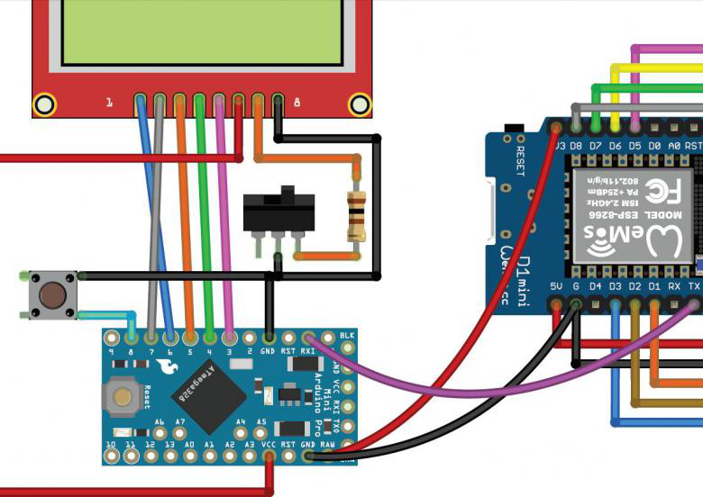
Подключение LCD 16x2 ниже. См. подключение резистора регулировки ( это и есть: * 10K resistor:
* ends to +5V and ground * wiper to LCD VO pin (pin 3))
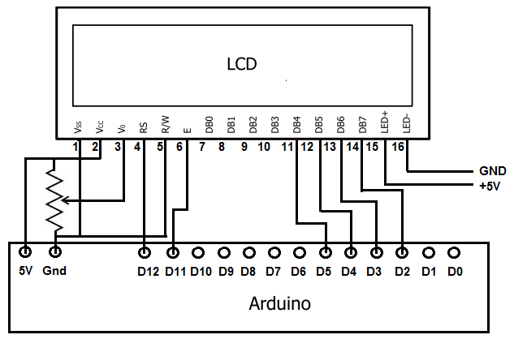
Втр, 11/04/2017 - 20:47#14
Andrew25
Offline
Зарегистрирован: 06.08.2014
Замечательный проект. Повторил его с OLED экраном. Мелковато, конечно, но часто смотреть на дисплей не приходится. Управление у меня только через Web интерфейс. При созданиии этого радио пришлось повторно покупать VS1053, так как сначала купил плату с микросхемой VS1003, при этом не будет работать AAC. Другие сложности были, но автор улучшает прошивку. Огромное ему спасибо.
Втр, 11/04/2017 - 21:19#15
lonely_jack
Offline
Зарегистрирован: 12.10.2015
Спасибо
Ср, 26/04/2017 - 14:23#16
glin
Offline
Зарегистрирован: 16.03.2017
Чтото у меня тоже с дисплеями туго.
На 16x2 дисплее В ардуину Pro mini прошивку залил, приветствие (карадио) на дисплее выводится, за тем загорается надпись IP: и всё. Я так понимаю информация с ECP не идет на ардуинку. Хотя провод Tx-Rx установлен.
0.96" I2C олед дисплей заработал
Ср, 26/04/2017 - 14:32#17
biplan
Offline
Зарегистрирован: 26.04.2017
Пожалуйста, помогите мне из этих деталей собрать интернет радио по примеру вот этого Webradio Плеер.
arduino mega 2560 + esp 8266 01 + vs1053b + 84 * 84 lcd module
|
|
|
|
Ср, 26/04/2017 - 14:48#18
glin
Offline
Зарегистрирован: 16.03.2017
Я думаю, чтобы помочь, вам надо написать на каком этапе у вас проблема.
Ср, 26/04/2017 - 17:55#19
biplan
Offline
Зарегистрирован: 26.04.2017
На начальном этапе.
Проблем нет только с усилителем звука. Ну и экран подключал - раболал нормально. Хотя экран не обязателен. Предполагаю использовать для прослушки только одной радиостанции, которая ушла с коротковолнового диапазона в интернет. На Webradio Плеер используют Arduino Pro Mini: и ENC28J60 модуль Ethernet. А у меня Меgа и esp8266. Arduino Mega совместим с большинством плат расширения, разработанных для Arduino. Но,пины разные, названия у них разные. Как всё это соединить и потом учесть в программе?
В общем дело за "малым", начать и законить.
Ср, 26/04/2017 - 18:47#20
glin
Offline
Зарегистрирован: 16.03.2017
А Ethernet обязателен? В принципе если соединить имеющиеся у вас VS1053 и esp8266 то радио уже будет работать. Только по WIFI. Если добавить 3-х вольтовую атмегу 386 - будет экран .
Ср, 26/04/2017 - 19:10#21
djuscha
Offline
Зарегистрирован: 26.04.2017
glin пишет:
0.96" I2C олед дисплей заработал
можешь поподробнее .как подключил, какои скетч .просто радио у меня работает уже. но пару вопросов есть всеравно.я например VS1053 подключил на пин 3.3 В на nodeMcu нету пина 5 В на картинке написано 5В то VU а на Nodemcu пин VI ето тоже самое? .потом нужно ли ADC соединять с GND у меня и так работает..еше не пойму через некоторое время радио умолкает ...пока слушал только Ретро FM помогает только выкл /вкл
Ср, 26/04/2017 - 20:49#22
glin
Offline
Зарегистрирован: 16.03.2017
Проблема в дисплеях получилась из-за разницы напряжения Rx-Tx. На ардуине было 5в, в ESP - 3в. Естественно был спален вывод Tx на ESP. Самое обидное что ардуина и 0.96" I2C олед дисплей отлично работают от 3 вольт и изначально запитывать их так и надо было.
Скетч не заливался из-за отсутствия нужных библиотек IR модуля.
P.S. кстати в ESP есть второй вывод Tx на D4. Может кто знает как его активировать?
Ср, 26/04/2017 - 22:00#23
vis22
Offline
Зарегистрирован: 24.10.2015
gjuscha пишет...
Судя по всему pin VI на Nodemsu это pin для подачи внешнего питания к которому подключён находящийся на борту Nodemsu стабилизатор 3,3V, поэтому если вы запитаете Nodemsu от внешнего источника питания 5V, то от этой же точки можно и запитать esp8266.
Вход ADC используется для подачи команд управления (стоп, воспроизведение, следующая станция, предыдущая и громкость больше и громкость ниже) с использованием внешнего делителя напряжения, поэтому если нет делителя и вывод ADC не заземлён на нем может навестись какое-то напряжение и программа esp8266 его интерпретирует как Команду. Причём команде "Стоп" соответсвует самый минимальный уровень напряжения на входе ADC, что и приводит к остановке приемника.
Ср, 26/04/2017 - 23:07#24
ssergo
Offline
Зарегистрирован: 10.05.2013
Esp-01 в этом проекте работать не будет однозначно. Если конечно нет желания под микроскопом припаиваться к ножкам микросхемы, гораздо проще и надежнее купить модуль Wemos d1 mini на базе ESP-12 ибо стоимость его меньше двух сотен рублей.
Для минимального комплекта достаточно Wemos d1 mini + VS1003/1053. Все.
Ардуинка нужна только для того чтобы по Tx вытягивать тэги воспроизводимого контента на экранчик. Использовать для этого Mega2560 глупо, ибо мини про хватит за глаза.
Да важное замечание, чтобы экран заработал надо скорость Uart порта на Esp-12 настроить на 28800.
Чт, 27/04/2017 - 09:52#25
djuscha
Offline
Зарегистрирован: 26.04.2017
vis22 пишет:
Судя по всему pin VI на Nodemsu это pin для подачи внешнего питания к которому подключён находящийся на борту Nodemsu стабилизатор 3,3V, поэтому если вы запитаете Nodemsu от внешнего источника питания 5V, то от этой же точки можно и запитать esp8266.
.gjuscha пишет...
вы имеете ввиду запитать vs1053??
а если NOdemcu запитана через microUSB то как тогда ?
c ADC теперь понятно спасибо
Чт, 27/04/2017 - 09:54#26
djuscha
Offline
Зарегистрирован: 26.04.2017
glin пишет:
Проблема в дисплеях получилась из-за разницы напряжения Rx-Tx. На ардуине было 5в, в ESP - 3в. Естественно был спален вывод Tx на ESP. Самое обидное что ардуина и 0.96" I2C олед дисплей отлично работают от 3 вольт и изначально запитывать их так и надо было.
Скетч не заливался из-за отсутствия нужных библиотек IR модуля.
P.S. кстати в ESP есть второй вывод Tx на D4. Может кто знает как его активировать?
скетчем и библиотеками не можешь поделится?
Чт, 27/04/2017 - 11:50#27
glin
Offline
Зарегистрирован: 16.03.2017
Скетчи для экранов брал здесь https://github.com/karawin/Ka-Radio/tree/master/Lcd%20%26%20remote
karadioU8glib - длля монохромного OLED.
|
Ссылки на необходимые библиотеки и всё что нужно для установки ниписано в конце файла u8glibConf. |
Библиотек надо три https://github.com/olikraus/u8glib/
https://github.com/shirriff/Arduino-IRremote
https://github.com/cyborg5/IRLib2
В первой надо найти файл U8g.h и раскоментировать строку #define U8G_16BIT 1
Чт, 27/04/2017 - 12:04#28
djuscha
Offline
Зарегистрирован: 26.04.2017
спасибо буду пробоватъ
Чт, 27/04/2017 - 18:53#29
vis22
Offline
Зарегистрирован: 24.10.2015
gjuscha пишет...
Да можно запитать vs1053 от пинка vi Nodemsu при питании последнего от usb.
Чт, 27/04/2017 - 23:14#30
djuscha
Offline
Зарегистрирован: 26.04.2017
Arduino: 1.8.2 (Windows 10), Board: "Arduino Pro or Pro Mini, ATmega328 (3.3V, 8 MHz)"
fork/exec C:\arduino-1.8.2\hardware\tools\avr/bin/avr-gcc.exe: Der Dateiname oder die Erweiterung ist zu lang.
Fehler beim Kompilieren für das Board Arduino Pro or Pro Mini.
выдает ошибку, имя или окончание длинное :(
Пт, 28/04/2017 - 13:05#31
citycat68
Offline
Зарегистрирован: 28.04.2017
Приветствую всех! Тоже повторил KaRadio. Несколько слов о стабильности. Поначалу имели место самопроизвольные затыки, перезагрузки и т.д. Соединил все провода, опираясь на информацию из текста с сайта, на резисторы подтяжки плюнул, результат удручающий - нестабильная работа. Только когда посадил ADC на землю (без резистора), СH_PC на +3.3 в (без резистора), GPIO0 на +3.3 в (через 10 к), GPIO2 на +3.3 в (через 1 ком+светодиод), работа стала более-менее стабильной. Использую голый модуль ESP-12E на плате-переходнике. Возможно, если бы сразу использовал NodeMcu (как автор проекта), этих проблем удалось бы избежать. Web интерфейс - да подтормаживает, но это пережить можно. Сейчас жду 23LCV1024, чтобы сделать внешний RAM. О результатах отпишусь. Параллельно слежу за проектом https://github.com/Edzelf/Esp-radio, его тоже повторил. Автор выкроил 20 кБайт под буфер в памяти ESP модуля, но этого маловато, а так вообще его проект тоже заслуживает внимания, хороший, простой интерфейс, работает стабильно. Сейчас он работает над реализацией радио на ESP-32, может быть там у него получится сделать больший буфер.
Пт, 28/04/2017 - 14:21#32
ssergo
Offline
Зарегистрирован: 10.05.2013
Также повторил KaRadio - на платформе Wemos D1 mini + LCD Nokia 5500 + arduino mini pro + кнопки. Все работает стабильно, но бывают зависоны редко, пришлось вывести на панель кнопку сброса ESP. Далее из-за дребезга кнопок вместо изменения громкости редко бывает, что переключаются станции. Уже несколько раз подстраивал резистор 16 кОм. Кроме того в проекте не хватает отображения кириллици в тегах.
Да еще, при компиляции скетча выводилось сообщение, что не хватает памяти и типа будет нестабильная работа. Но работает все стабильно, в том числе и регулируется контрастность.
Пт, 28/04/2017 - 21:45#33
vis22
Offline
Зарегистрирован: 24.10.2015
djuscha пишет:
Arduino: 1.8.2 (Windows 10), Board: "Arduino Pro or Pro Mini, ATmega328 (3.3V, 8 MHz)"
fork/exec C:\arduino-1.8.2\hardware\tools\avr/bin/avr-gcc.exe: Der Dateiname oder die Erweiterung ist zu lang.
Fehler beim Kompilieren für das Board Arduino Pro or Pro Mini.
выдает ошибку, имя или окончание длинное :(
Наверное вот это в пути лишнее: C:\arduino-1.8.2.
Поробуй переустановить просто в: C:\arduino
Пт, 28/04/2017 - 22:41#34
vis22
Offline
Зарегистрирован: 24.10.2015
ssergo пишет:
.......
Кроме того в проекте не хватает отображения кириллици в тегах.
......
В данном проекте ESP шлет через ком порт мета данные ( названия песни и исполнителя) в кодировке UTF-8, что бы дисплей отображал такие данные кирилицей, надо в скетче arduino предусмотреть замену приходящих UTF-8 символов в кодировку понятную дисплею.
Пт, 28/04/2017 - 22:55#35
djuscha
Offline
Зарегистрирован: 26.04.2017
ет уже пробовал .или у меня проблема с библиотеками или надо что то правитъ в скетче
Пт, 28/04/2017 - 22:55#36
ssergo
Offline
Зарегистрирован: 10.05.2013
vis22 пишет:
В данном проекте ESP шлет через ком порт мета данные ( названия песни и исполнителя) в кодировке UTF-8, что бы дисплей отображал такие данные кирилицей, надо в скетче arduino предусмотреть замену приходящих UTF-8 символов в кодировку понятную дисплею.
Это будет сложновато, т.к. памяти впритирку. Да и не все мета данные идут в UTF-8, я встречал и СР866, хотя это и экзотика. Но памяти мало - это факт.
Сб, 29/04/2017 - 00:09#37
vis22
Offline
Зарегистрирован: 24.10.2015
ssergo пишет:
Это будет сложновато, т.к. памяти впритирку. Да и не все мета данные идут в UTF-8, я встречал и СР866, хотя это и экзотика. Но памяти мало - это факт.
Если памяти мало, нужно заменить pro mini на Arduino nano v3.0, там памяти вдвое больше при полной совместимости по выводам.
Сб, 29/04/2017 - 06:26#38
ssergo
Offline
Зарегистрирован: 10.05.2013
vis22 пишет:
Если памяти мало, нужно заменить pro mini на Arduino nano v3.0, там памяти вдвое больше при полной совместимости по выводам.
Не так все просто. У меня мини про на базе atmega328, а не atmega168. Ардуино нано также построен на базе atmega328. Можно конечно использовать Arduino mega 2560 или 1280, но тут жаба давит.
Да по большому счету не так это и важно и нужно - отображение русских букв. Главное отображается название станции и звук идет хорошо.
Заказал у дядюшки Ляо плату декодера на базе VS1053, взамен Имеющейся VS1003. Можно будет потоки AAC слушать.
Вс, 30/04/2017 - 22:39#39
udavst
Offline
Зарегистрирован: 29.11.2013
glin пишет:
P.S. кстати в ESP есть второй вывод Tx на D4. Может кто знает как его активировать?
а второй tx служебный, в него загрузчик плюётся, как-то наверное переключается, но вроде как после загрузчика это уже не tx.
Мне нужен был ещё один RX - я его сделал с softwareserial, сделайте так же TX на любой контакт.
|
#include <SoftwareSerial.h> |
|
02 |
SoftwareSerial mySerial(2, 20); // RX, TX (TX у меня не используется - не существующий контакт) |
|
03 |
|
|
04 |
void setup() { |
|
05 |
mySerial.begin(9600); |
|
06 |
} |
|
07 |
|
|
08 |
void loop() { |
|
09 |
if (mySerial.available()){ //если что-то пришло с экрана |
|
10 |
Serial.print(mySerial.read(),HEX); } //выводим в консоль |
|
11 |
} |
Сб, 29/04/2017 - 23:09#40
Andrew25
Offline
Зарегистрирован: 06.08.2014
Проблему с кириллицей частично решил.
Я просто заменил один из шрифтов на кириллический. Большинство тегов отображается нормально. Заметил только, если в web-интерфейсе отображаются кракозябры, то и на дисплее они отображаются, а если в вебе нормально, то и на дисплее нормально. А преобразование в скетче одной кодировки в другую я не осилю.
У меня другая проблема есть. Не заливается патч для воспроизведения AAC. Стоит только обновить по воздуху, как проигрывание AAC исчезает. Команда заливки патча не помогает, хотя пару раз восстанавливал. Пришлось забить на AAC, полно потоков и на mp3.
Вс, 30/04/2017 - 06:49#41
ssergo
Offline
Зарегистрирован: 10.05.2013
Andrew25 пишет:
Проблему с кириллицей частично решил.
Я просто заменил один из шрифтов на кириллический. Большинство тегов отображается нормально. Заметил только, если в web-интерфейсе отображаются кракозябры, то и на дисплее они отображаются, а если в вебе нормально, то и на дисплее нормально. А преобразование в скетче одной кодировки в другую я не осилю.
D
Скетч в студию !
Вс, 30/04/2017 - 18:00#42
Andrew25
Offline
Зарегистрирован: 06.08.2014
https://cloud.mail.ru/public/LG6p/LZQicYfv6
Скачайте файл. В папке с библиотекой u8glib должен быть файл такой же файл (u8g_font_data.c). Заменить его скачанным файлом, можно сохранить где-нибудь исходный на всякий случай.
После этого в скетче использовать шрифт u8g_font_04b_03br
Если в веб-интерфейсе кракозябры, то все равно будут и на дисплее они, а если в веб нормально отображаются теги, то будет нормально все.
Я это все по памяти пишу, поэтому могу ошибиться, но попробуйте.
Втр, 02/05/2017 - 11:03#43
glin
Offline
Зарегистрирован: 16.03.2017
udavst пишет:
...Мне нужен был ещё один RX - я его сделал с softwareserial, сделайте так же TX на любой контакт...
Спасибо за пример. Но код автора закрыт и править не получится. Проблему со сгоревшим Tx решил переходом на другой проект от Edzelf по ссылке выше. Там хоть и послабее интерфейс, но зато TFT экран подключается непосредственно к ESP не нужна ардуина и код открыт для правки.
Втр, 02/05/2017 - 15:05#44
djuscha
Offline
Зарегистрирован: 26.04.2017
как это понимать ?
DO NOT connect the Rx pin of the lcd to the Tx pin of the mini Pro
на LCD только пины GNG .VDD. SCK. SDA .
и еще я с временем никак не разберусь .все время показывает 00.01.2000 в скетче уже поменял ТZО ..время
}
loopScroll++;
if ((++loopTime%2400) == 0) itAskTime=true;
на 2400 было 7200.. ничего не изменилось в чем может быть моя ошибка?
Втр, 02/05/2017 - 16:57#45
udavst
Offline
Зарегистрирован: 29.11.2013
Соединил минимальный вариант, по схеме, что в первом посте (ну и в архиве автора), похоже пришёл мне модуль не рабочий, вроде шипит при запуске, при инициализации пропадает шипение, что-то вообщем-то с ним происходит, но музыка через него не играет (хотя монитором через WEB всё в порядке). ESP менял на совершенно другую модель - та же история. И как продавцу доказать, что модуль не рабочий - хз, на фото ведь не снимешь, как и на видео не доказательство. Да и проверить его фиг знает как. Огорчение одно.
glin пишет:
решил переходом на другой проект от Edzelf по ссылке выше.
В том проекте громкость с кнопок не регулируется?
Втр, 02/05/2017 - 18:15#46
djuscha
Offline
Зарегистрирован: 26.04.2017
vis22 пишет:
Использовал допаяв параллельно конденсаторам С18 и С17 электролиты 100 мкф/16в ( без них иногда модуль зависал). Модуль не имеет конденсаторной развязки по линейному выходу, так что будьте осторожны и при не обходимости ставьте разделительные конденсаторы ( мне не потребовались стоят в бум-боксе).
vis22 можно поподробнее ...как правильно припаять ? плюс минус?
сегодня было больше времени послушать радио ...Иногда зависает не поиму из-за чего. Иногда на TFT стоит Stoped..а иногда просто замолкает.
Втр, 02/05/2017 - 20:34#47
vis22
Offline
Зарегистрирован: 24.10.2015
Для djuscha
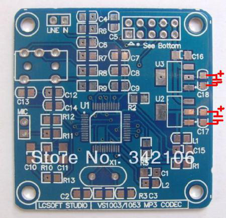
Втр, 02/05/2017 - 22:09#48
glin
Offline
Зарегистрирован: 16.03.2017
udavst пишет:
...похоже пришёл мне модуль не рабочий, вроде шипит при запуске, при инициализации пропадает шипение, что-то вообщем-то с ним происходит, но музыка через него не играет (хотя монитором через WEB всё в порядке). ESP менял на совершенно другую модель - та же история. И как продавцу доказать, что модуль не рабочий - хз, на фото ведь не снимешь, как и на видео не доказательство. Да и проверить его фиг знает как. Огорчение одно.
glin пишет:
решил переходом на другой проект от Edzelf по ссылке выше.
В том проекте громкость с кнопок не регулируется?
Попробуй допаять конденсаторы как показано выше, если не поможет отсоедини вывод XRST - проверь без него работу.
В проекте Edzelf громкость с кнопок не регулируется.
Сб, 19/10/2019 - 17:21#49
udavst
Offline
Зарегистрирован: 29.11.2013
Я сегодня пропаял весь модуль, о чудо - завёлся, кондёры не паял, вроде и так чистое питание, с виду вроде всё пропаяно было, но не работало.
Ещё одна замутка - схемы не совпадают с реальностью ), например, на схеме в архиве (которая в первом посте ч/б) и на рисунке в цвете (так же как и в надписи соединений в первом посте) местами поменяны XDCS и DREQ. Работает так, как на цветной схеме, и в надписи, но не работает, как нарисовано у автора, что за бред, я не понял, хотя не было важно, тк плата не работала из-за непропая, а после пропайки я и так и так пробовал.
К стати, на схеме 23lcv1024 - это в качестве чего используется? Это буфер? По идее вместо неёможно поставить 23lc1024,они хоть на али есть. Кто-нибудь собирал с ней?
Ср, 03/05/2017 - 10:59#50
glin
Offline
Зарегистрирован: 16.03.2017
Да, точно! Я совсем забыл. Многие детали на модуле были припаяны только с одной стороны. Я это заметил на этапе сборки и запаял брак.

 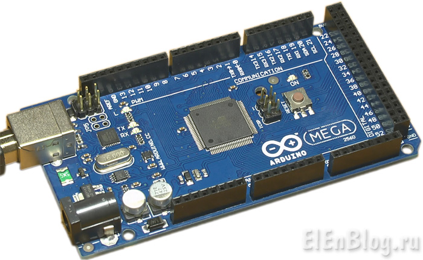
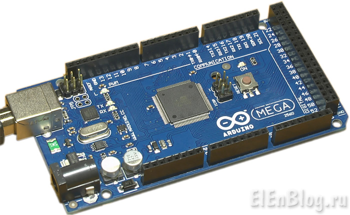